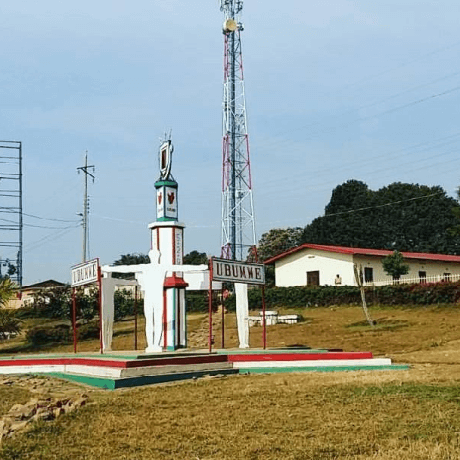

Mengetahui sedikit lebih baik tempat asal teman online Anda
Setiap manusia adalah seniman, makhluk yang bebas, dipanggil untuk berpartisipasi dalam mengubah dan membentuk kembali kondisi, pemikiran, dan struktur yang membentuk dan menerangkan kehidupan kita.
— Joseph Beuys
Kota Practicum telah mempertemukan para profesional dari berbagai penjuru dunia. Hari ini, Galeri Seni Practicum dengan bangga mempersembahkan cerita dan gambar dari beberapa orang yang mendedikasikan waktu dan upaya mereka untuk membuat para profesional teknologi masa depan di kota ini merasa seperti di rumah sendiri. Masing-masing dari kita memiliki cerita unik tentang tempat kita berasal. Jangan ragu untuk menambahkan cerita Anda sendiri dan karya seni visual yang didedikasikan untuk kampung halaman Anda ke dalam koleksi kami. Dari mana pun Anda berasal, kami senang Anda adalah tetangga kami.


Kyiv, Ukraine

ARTIS
Natalia Dolgushina, produser konten
Kyiv (atau Kiev), ibu kota Ukraina, adalah kota besar yang terletak di tepi sungai Dnipro. Tentu saja, tidak ada orang waras yang akan berenang di sungai, kecuali mereka dibesarkan di sini, dalam hal ini mereka mungkin pernah mencobanya. Musim panas di sini panas, dan musim dinginnya berangin, tetapi musim gugur dan musim semi benar-benar menakjubkan.
Kota itu sendiri merupakan campuran arsitektur prarevolusi, pascaperang, dan soviet, semuanya ditaburi dengan balkon yang dimodifikasi. Jika Anda berada di tepi kanan sungai Dnipro, pemandangannya sulit untuk dilalui oleh orang-orang yang bersepeda dan yang memakai sepatu hak tinggi. Tepi kiri dianggap jauh kurang menarik dan bergengsi, bahkan oleh orang-orang yang tinggal di pinggiran paling kanan.
Criccieth, Wales
ARTIS
Steffan Warren, editor utama
Reruntuhan abad pertengahan Kastel Criccieth menghadap ke kota di bawah batu yang menjorok ke laut. Menurut perkiraan, kastel itu dibangun oleh Llywelyn yang Agung pada abad ke-13. Sekitar 900 tahun kemudian, Mutiara Wales di Pesisir Snowdonia yang memiliki gayanya sendiri telah menjadi tujuan wisata populer selama bulan-bulan musim panas.
Berjalan kaki singkat dari kastel, Anda dapat menikmati es krim terbaik dunia di Cadwalader, yang bahan rahasianya dikabarkan berasal dari rumput laut lokal. Klaim lain mengenai ketenarannya adalah kenyataan bahwa Criccieth memenangkan penghargaan Wales in Bloom selama lima tahun berturut-turut untuk pajangan bunga spektakuler di sekitar kota. Criccieth juga merupakan rumah bagi David Lloyd George, satu-satunya orang Wales yang pernah memegang jabatan sebagai Perdana Menteri Inggris.
Berea, Amerika Serikat

ARTIS
Travis Turner, penulis dan editor
Berea adalah kota kecil yang terletak di bagian tengah Kentucky. Kota ini dikelilingi oleh hutan dan pedesaan yang indah. Kota ini dikenal sebagai ibu kota seni dan kerajinan negara bagian, dan pengunjung akan menemukan banyak kesempatan berbelanja: toko dengan perhiasan buatan tangan, lilin, barang kayu, galeri, studio kaca, dan banyak lagi. Kota ini mengadakan festival tahunan untuk merayakan "roti sendok", hidangan lokal yang dibuat dengan roti jagung dan disajikan dengan sendok kayu.
Namun, kota ini mungkin paling dikenal karena perguruan tinggi lokalnya. Berea College didirikan pada tahun 1855 dan merupakan perguruan tinggi pertama di selatan yang terintegrasi secara rasial, serta yang pertama dalam hal pendidikan bersama. Uniknya, tidak ada biaya kuliah karena setiap siswanya menerima beasiswa penuh.
Muramvya, Burundi
ARTIS
Grevisse Kenguruka, editor teknis
Muramvya adalah salah satu dari 18 provinsi Burundi. Di era kerajaan, Muramvya adalah ibu kota kerajaan dan pada tahun 2007, karena lanskap budaya dan alamnya, Muramvya ditambahkan ke Daftar Tentatif Warisan Dunia UNESCO. Kota ini berada di pusat Burundi, di antara ibu kota politik dan ekonomi negara Burundi.
Cuaca sedikit dingin di malam hari, tetapi pada siang hari, Anda akan berpikir Anda berada di surga. Pada ketinggian 2.665 meter (8.743 kaki) di atas permukaan laut, Gunung Teza adalah salah satu tempat terdingin di provinsi ini. Namun, angin sejuk memungkinkannya menjadi salah satu perkebunan teh dan kopi terbesar di negara ini, yang menjadi sumber ekspor Burundi terbesar.
Taman Nasional Kibira, salah satu suaka margasatwa kera terbesar, terletak di empat provinsi, termasuk Muramvya. Taman Nasional ini terletak di puncak pegunungan yang indah di Congo-Nile Divide, dengan ketinggian berkisar antara 1.550 dan 2.660 meter. Taman Nasional ini dipenuhi dengan tumbuh-tumbuhan yang indah, dan sumber bagi berbagai sungai dan aliran yang menyediakan air di seluruh negeri.
Makassar, Indonesia
ARTIS
Muhammad Avid Cahyadi
Kota Makassar adalah salah satu kota metropolitan di Indonesia dan sekaligus sebagai ibu kota provinsi Sulawesi Selatan. Kota Makassar merupakan kota terbesar keempat di Indonesia dan terbesar di Kawasan Timur Indonesia.
Kota Makassar memiliki kondisi iklim tropis yang bertipe iklim tropis muson (Am), hal tersebut ditandai dengan kontrasnya jumlah rata-rata curah hujan di musim penghujan dan musim kemarau. Musim hujan biasanya berlangsung sejak bulan November hingga bulan Maret dan musim kemarau berlangsung dari bulan Mei hingga bulan September.
Benteng Fort Rotterdam merupakan peninggalan sejarah dari Kerajaan Gowa-Tallo yang terletak di pinggir pantai sebelah barat Kota Makassar, Sulawesi Selatan. Benteng ini dibangun pada 1545 oleh Raja Gowa ke-10 yang bernama I Manrigau Daeng Bonto Karaeng Lakiung dengan gelar Karaeng Tunipalangga Ulaweng. Pada awalnya, benteng ini berbentuk segi empat seperti ciri khas benteng Portugis. Namun, ketika Kerajaan Gowa-Tallo menyerah setelah menandatangani Perjanjian Bongaya pada abad ke-17, Benteng Fort Rotterdam jatuh ke tangan Belanda dan dibangun kembali oleh VOC menjadi seperti sekarang ini.